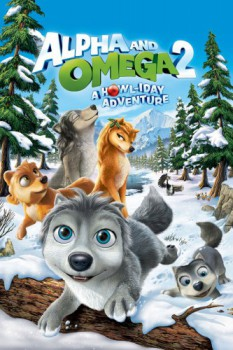

Country:United States, 45 minutes
Spoken languages:English
Genres:Animation, Adventure, Comedy
Director(s):Richard Rich, Steve Moore
Writer(s):
Video Codec:Unknown
Number: 5479

Certification:G
Storyline:
Kate & Humphrey and their three wolf cubs (Smokey, Claudette and Runt) are happily preparing to celebrate their first winter holidays together when their smallest cub, Runt, mysteriously disappears. They must now go on a new journey across the wilderness to find Runt before the winter festivities begin at home.
Cast:
Ben Diskin (voice of Humphrey), Marieve Herington (voice of Claudette), Liza West (voice of Runt), Tracy Pfau (voice of Eve), Meryl Leigh (voice of Princess)
Medium: Media file,
Location: D:\Personal\Sarah Disk\Documents\Curse\Minecraft\Install\assets\virtual\legacy\sounds\mob\wolf\howl2.ogg
Loaned: No
Aspect ratio: Unknown